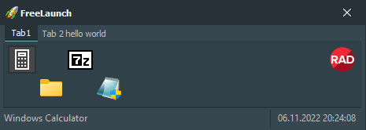

FreeLaunch is a free links manager for Microsoft Windows. It allows to organize shortcuts to your programs, files and folders. FreeLaunch is easy and fully configurable.
Features:
-
Launch programs, open files and folders
With one click on any button, you can launch the program, open a file or folder.
-
Launch programs with specific priority and window state
For each program, you can specify the priority and other parameters with which it will be launched.
-
Optional tabs, rows and buttons count
You can use from one to fifty tabs, each of which can be labeled. The program allows you to place on each tab from one to a hundred rows, each of which can contain more than hundred buttons.
-
Optional buttons size
You can change the size of the buttons if you are not satisfied with the standard size.
-
Drag'n'drop files and folders
By dragging the file to the button with the program, it can be opened in this program.
-
Drag'n'drop moving buttons and tabs
By dragging the tabs and buttons, you can change not only the location of the buttons on the tabs, but also the order of the tabs.
-
Some other useful features and settings